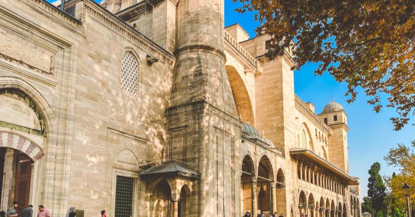

İstanbul Boğazı’nın Asya kıtasındaki kıyılarında konumlanan Anadolu Hisarı;
1395 yılında Sultan Beyazıt tarafından inşa ettirilen bir tarihi eser.
Göksu Deresi’nin denizle buluştuğu yere ve boğazın en dar noktasına,
660 metrelik mesafede bulunan noktaya yapılan hisar, bulunduğu semte de adını veriyor.
Hisar, 7.000 metrekarelik bir alanda inşa edilmiştir. Surların kalınlığı ise 2,5 metreyi bulmaktadır.
Osmanlı Dönemi’nde Gözlücehisar olarak da anılan, küçük bir kale ve surlardan oluşan yapı;
boğazdaki transit geçişleri kontrol altına almak amacıyla Osmanlı mimarisinin en güzel örneklerinden biri olarak hayata geçirilmiş.
Beykoz ilçesinde yer alan Anadolu Hisarı’na, Kadıköy ya da Üsküdar iskelelerinden kalkan dolmuşlar aracılığıyla ulaşmanız mümkün.
Anadolu Hisarı Mh., 34810 Beykoz/İstanbul
(0212) 263 53 05
Ziyaret açık olmamakla birlikte sadece Hisarlar Müzesi Müdürlüğü’nün izni ile girilebilir.
Özel izinle girilebilir.
Yoros ve İmros Kaleleri
Karadeniz ve Boğaz’ın birleştiği noktada karşılıklı olarak inşa edilen Yoros ve İmros Kaleleri,
askeri ve ticari amaçla kullanılmıştır. Bizanslıların elindeki kaleler,
Doğu Roma’nın güçsüz olduğu zamanda Cenevizlilerin de himayesinde kalmıştır.
Kaleler, 14. yüzyılda Osmanlılar tarafından da fethedilmiştir.
Yoros Kalesi, sahip olduğu özellikler neticesinde 2013 yılında UNESCO Geçici Listesi’ne de dahil edilerek, ne kadar önemli ve tarihi bir yapı olduğunu kanıtlamıştır.
Kaleler aynı zamanda manzarası ile de ziyaretçilerini kendine hayran bırakmaktadır.
Yoros Cafe, bölgeyi ziyaret edenlere muhteşem manzara eşliğinde kahvaltı yapma olanağı da sunmaktadır.
Anadolu Kavağı Mahallesi, Tuna Cd. No:5, 34825 Beykoz/İstanbul
(0216) 320 20 56
Her gün 09.30 – 22.00 saatleri arasında açık.
Giriş ücretsiz.

Süleymaniye Camii
Mimar Sinan tarafından inşa edilen Süleymaniye Camii, Kanuni Sultan Süleyman’ın emriyle 1551-1557 yılları arasında inşa edilmiştir.
Camiinin inşası için ülkenin pek çok farklı noktasından malzemeler getirtilmiştir.
Tarihçilere göre cami inşaatında 3.500’ün üzerinde işçi çalışmıştır.
Burası sadece bir cami değil, 15 bölümden bir külliyedir ve türbelerden medreseye pek çok bölümden oluşmaktadır.
Caminin akustiği ise “kusursuz” olarak nitelendirilmektedir.
Camide bulunan dört minare Kanuni’nin İstanbul’un fethinin ardından tahta geçmiş olan 4 ve on şerefe ise Osmanlı Devleti’ndeki tahta geçen 10. padişahı olmasını simgelemektedir.
Camiye imam seçilirken iki dil bilme ve sosyal bilimlerle ilgili eğitim almış olma şartının konması ise Osmanlı’nın ve Mimar Sinan’ın bu camiye ne kadar önem verdiğini bizlere göstermektedir.
Süleymaniye Mah, Prof. Sıddık Sami Onar Cd. No:1, 34116 Fatih/İstanbul
(0212) 222 28 82
Her gün 09.00-18.00
Giriş ücretsiz.
Aya Triada Rum Ortodoks Kilisesi
1876-1880 tarihleri arasında inşa edilen Aya Triada Rum Kilisesi; konum olarak İstanbul’un kalbi sayılan Taksim’de yer alıyor.
Ortodoks mezhebi için önemi bulunan tarihi yapı, geçmişte Rum mezarlığı ve Yunan hastanesi olarak kullanılan ancak daha sonra tahliye edilen bir alan üzerine kurulu.
İnşaata Potessaro isimli mimar başlamış olsa da yapı, Vassilaki Ionnidis tarafından tamamlanmıştır.
Bina, yapıldığı döneme kadarki kiliseler arasında kubbeli olarak inşa edilen ilk kilise olma özelliğine sahipti.
Heykeltıraş Alexandros Krikelis mermer eserler üretirken Sakellarios Megaklis iç mekanı boyamış ve süslemiştir.
6-7 Eylül 1955 yılları arasında İstanbul Olayları sırasında yakılan ve yağmalanan kilisedeki, isler, o günün hatırlanması adına hala görülebilmektedir.
Kilisedeki bazı bölümlerin tadilatı için gerçekleştirilen restorasyon çalışmaları ise iki yıl sürmüş ve kilise 2003 yılında yeniden ziyaretçi kabul etmeye başlamıştır.